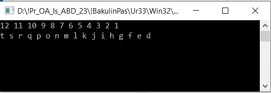

| Самостоятельная работа 33. Выполнить работу в pascal, C# и Python. | ||
| Назад | ||
|
Задание 1. Напечатать последовательность символов в обратном порядке, используя рекурсивный вызов процедуры. Напечатать в последовательном порядке (от d - код 100 до t - код 116 английский алфавит).

|
||
| Конспект подготовлен Бакулиным А. М. 2022 год. | ||